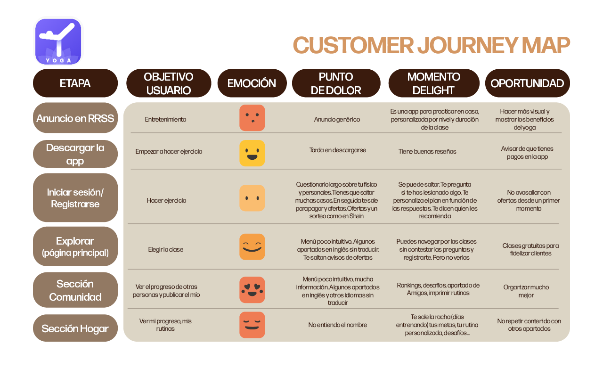
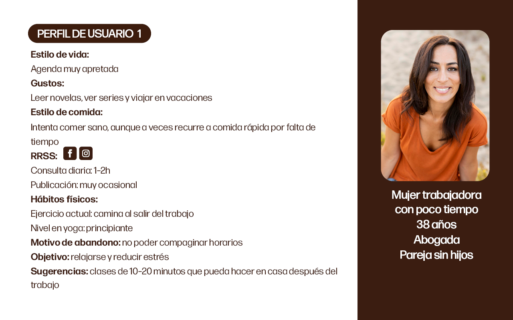
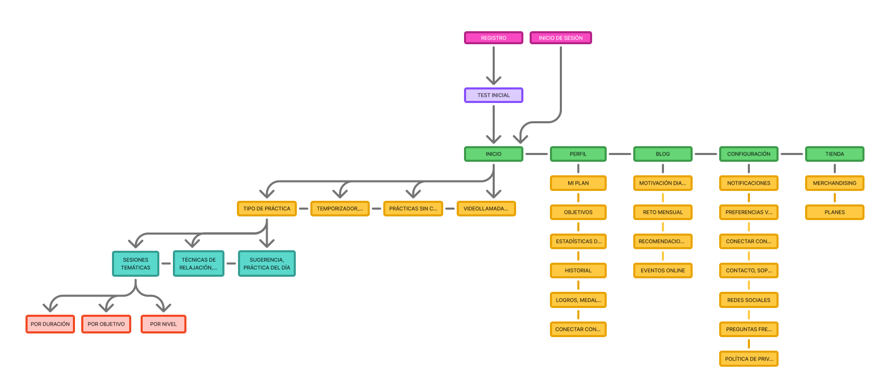
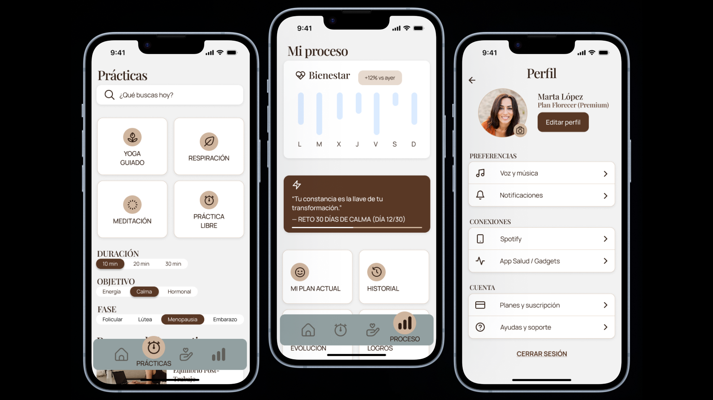

PAUSANA
App de yoga diseñada específicamente para mujeres de 30 a 50 años. Práctica adaptada al ciclo hormonal y corrección de posturas en tiempo real.

El problema
El mercado de apps de yoga está saturado de herramientas diseñadas para todos. Las aplicaciones existentes como Down Dog o Daily Yoga ofrecen catálogos amplios, pero no tienen en cuenta un dato relevante: las mujeres constituyen la mayoría de los practicantes de yoga, y sus necesidades específicas no están resueltas por ninguna app del mercado.
El reto era diseñar una app de yoga para mujeres de entre 30 y 50 años, que les permitiera practicar con guía real, adaptar la práctica a su momento hormonal y acceder a corrección de posturas en tiempo real para evitar lesiones.
"Una mujer con diez minutos libres no necesita mil opciones. Necesita encontrar su práctica en treinta segundos."
La investigación
Para entender el contexto comencé analizando las dos apps de referencia del sector: Down Dog y Daily Yoga. Elaboré 2 journey maps trazando la experiencia de una usuaria tipo en cada una, identificando fricciones, momentos de abandono y funciones infrautilizadas.
A partir de ahí construí 7 personas que representaban distintos perfiles dentro del público objetivo: diferente experiencia con el yoga, diferentes motivaciones y diferente disponibilidad de tiempo.


El proceso
Con las personas y los journey maps como base, realicé un card sorting para construir el mapa de navegación inicial. El resultado fue una arquitectura con 6 secciones principales y múltiples subniveles. Cada función en su sitio, pero demasiadas cosas en demasiados sitios.
El card sorting no me dio la solución, me dio el problema. Tomé la decisión de simplificar radicalmente: de 6 secciones complejas a 5 con lógica clara. Eliminé la tienda, el blog y la comunidad: funciones interesantes, pero no esenciales para quien quiere practicar ahora.
El cambio más importante de arquitectura fue sacar la videollamada con instructores del fondo de un submenú y darle visibilidad directa desde el primer nivel.


La solución
Pausana es una app de yoga diseñada específicamente para mujeres de 30 a 50 años, organizada en torno a cinco espacios:
- →
Inicio — acceso rápido a la práctica del día adaptada al estado actual de la usuaria
- →
Prácticas — biblioteca filtrable por duración, nivel, objetivo y momento hormonal
- →
Acompañamiento — videollamada y chat en directo con instructoras para corrección en tiempo real
- →
Mi Proceso — seguimiento de historial y progreso personal
- →
Perfil — configuración de preferencias

Mockups — Añade tus imágenes aquíResultado & Aprendizaje
Los tests de usabilidad validaron que la arquitectura simplificada reducía significativamente la fricción para encontrar una práctica. Todos los insights extraídos se implementaron en la versión final del prototipo.
El aprendizaje más valioso: diseñar para todos es a menudo diseñar para nadie. La decisión de eliminar funciones fue la más difícil y la más importante. Un buen diseño no es el que tiene todo, sino el que tiene lo justo para que el usuario llegue donde necesita llegar.